Curso: Banco de Dados Relacionais Professor: Dr. Fábio Leite Instituição: Universidade Estadual da Paraíba (UEPB), Campus I — Campina Grande, PB
Este documento reúne, em um único arquivo, todo o conteúdo do Módulo 01, organizado na mesma sequência em que os arquivos originais aparecem na pasta modulo_01:
Apresentação: Dr. Fábio Leite
Por que usar?
Quais as vantagens e desvantagens?
Banco de dados é uma coleção de dados estruturados e relacionados. O termo "estruturado" se refere a um formato bem definido e organizado. O SGBD (Sistema de Gerenciamento de Banco de Dados) é o software que permite aos usuários criar e manter essa coleção de dados. A característica "relacionado" é fundamental: os dados devem possuir um significado implícito e lógico, representando fatos conhecidos do "mundo real" que foram registrados.
Embora um banco de dados possa ser teoricamente não-computadorizado, o foco principal é em bancos de dados computadorizados. O SGBD, ao gerenciar esses dados armazenados eletronicamente, utiliza estruturas de armazenamento eficientes e mecanismos de controle para garantir que eles sejam manipulados de forma segura, correta e rápida.
Ele permite o gerenciamento eficiente de grandes volumes de informações, facilitando a inserção, consulta, atualização e remoção de dados. Estas quatro operações (inserção, consulta, atualização e remoção) são conhecidas coletivamente como as operações básicas de manipulação de dados.
O SGBD facilita essas operações ao fornecer:
O SGBD lida com diversos Usuários e Programas (os Atores, como o DBA, Designers e Usuários Finais) que acessam o sistema para executar suas requisições.
O ponto central dessa interação é a Consulta (Query). Estas requisições são processadas pelo Processador de Consultas, que tem a função de analisar a sintaxe (geralmente SQL), traduzir e otimizar a solicitação, gerando um plano de execução eficiente para máxima performance na recuperação dos dados. Sendo assim, são tratadas por todos os elementos do SGBD para retornar o que foi requerido.
Para alterações seguras, o SGBD utiliza Transações, que são unidades de execução regidas pelas propriedades ACID: Atomicidade (ou completa, ou desfeita), Consistência (mantém o estado válido), Isolamento (execução independente) e Durabilidade (alterações permanentes). O SGBD garante o cumprimento do ACID por meio de seus módulos de Controle de Concorrência e Recuperação de falhas.
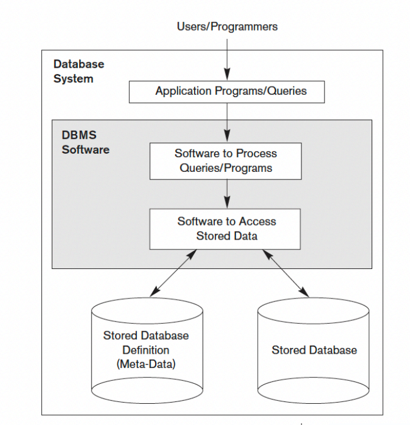
Definir um banco de dados envolve especificar:
Construir um banco de dados é a fase de implementação do esquema, utilizando a Linguagem de Definição de Dados (DDL) para criar a estrutura. Em seguida, os dados são armazenados no meio físico, com o SGBD controlando esses detalhes para abstrair o usuário dos pormenores de armazenamento.
Um SGBD provê acesso aos dados de forma:
Sendo assim, os principais serviços são:
A história dos Sistemas Gerenciadores de Banco de Dados (SGBDs) começou na década de 1950 com o ineficiente Processamento de Arquivos individualizados. A necessidade de centralizar dados levou à criação dos primeiros SGBDs de Primeira Geração nos anos 1960 (Modelos Hierárquico e de Rede). A verdadeira revolução veio nos anos 1970 com o Modelo Relacional de E.F. Codd, dando origem aos SGBDs de Segunda Geração, que utilizam tabelas e a linguagem SQL, separando a lógica dos dados do seu armazenamento físico. A evolução continuou com os modelos Objeto-Relacionais nos anos 80/90 (Terceira Geração) e, mais recentemente, com o surgimento dos sistemas NoSQL, que oferecem alta escalabilidade para lidar com o volume e a variedade do Big Data moderno.
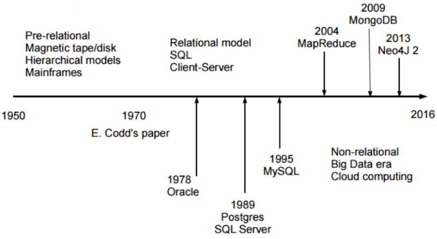
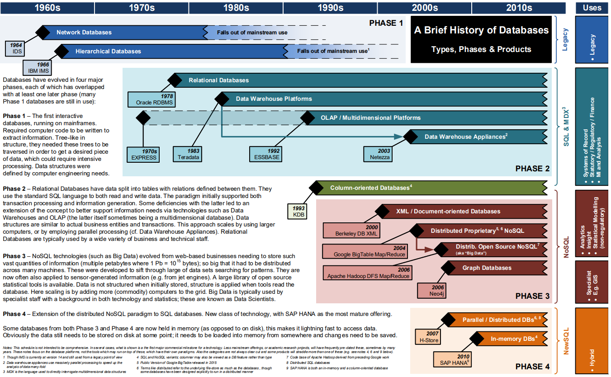
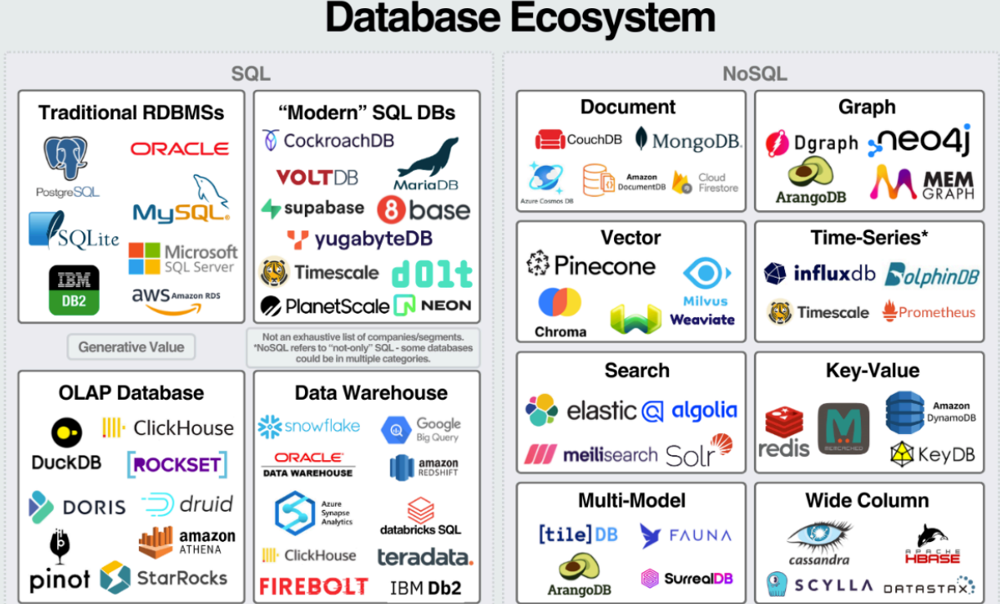
O SGBD utiliza uma arquitetura de três esquemas para garantir a independência de dados, separando as diferentes formas como o banco de dados é visto e implementado.
Visões do usuário
Conceitual
Físico
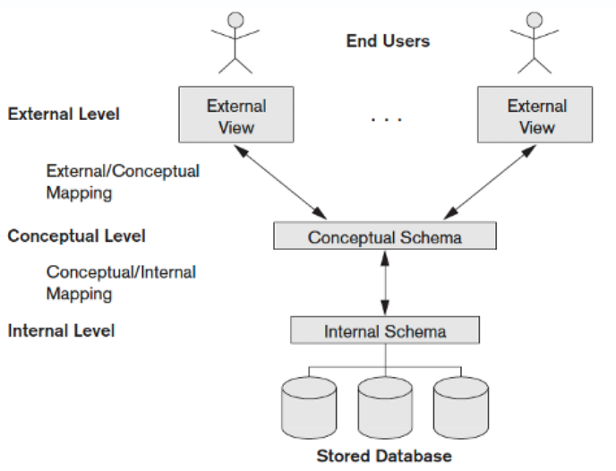
"Deve ser possível que esquemas de dados possam mudar sem afetar as definições de esquemas de níveis superiores."
Edgar F. Codd
Modelo Conceitual
Modelo Lógico
Departamento
|
Empregado
|
Dependente
|
| Desvantagem | Impacto |
|---|---|
| Alto custo | Licenças, hardware e suporte. |
| Complexidade | Exige configuração, administração e gerenciamento do banco de dados. |
| Consumo de recursos | Maior utilização de CPU, memória RAM e espaço em disco. |
| Necessidade de especialistas | Requer DBAs e desenvolvedores com conhecimento em bancos de dados. |
| Sobrecarga (Overhead) | O controle de transações, concorrência e segurança pode reduzir o desempenho em alguns cenários. |
| Dependência do fornecedor | Pode dificultar a migração para outro SGBD devido a recursos proprietários. |
| Implantação mais lenta | Exige planejamento, modelagem e configuração antes do uso. |
| Ponto único de falha | A indisponibilidade do banco pode interromper diversos sistemas que dependem dele. |
| Manutenção contínua | Necessita de backups, atualizações, monitoramento e otimização periódicos. |
| Curva de aprendizagem | Exige conhecimento em SQL, modelagem de dados, transações, índices e otimização de consultas. |
Observação: Este capítulo apresenta os principais serviços oferecidos por um Sistema Gerenciador de Banco de Dados (SGBD).
Um SGBD moderno oferece muito mais do que armazenamento de dados. Entre seus serviços estão persistência, segurança, recuperação de falhas, otimização de consultas, replicação, suporte analítico e integração com BI e Machine Learning.
Este arquivo é um modelo estruturado para o capítulo. Expanda cada seção conforme o material do curso.
Persistência refere-se à forma como os dados são armazenados de maneira durável em disco e recuperados pelo SGBD. Componentes importantes:
flowchart TD
A[Aplicação] -->|SQL| B[Storage Engine]
B --> C[Páginas / Extents]
C --> D[Armazenamento em disco]
B --> E[Transaction Log]
E --> F[Durabilidade / Recovery]
B --> G[ACID]
G --> H[Atomicidade]
G --> I[Consistência]
G --> J[Isolamento]
G --> K[Durabilidade]
Exemplo prático (SQL Server): transação com rollback/commit
BEGIN TRANSACTION;
INSERT INTO Clientes (Nome, Email) VALUES ('Ana', 'ana@exemplo.com');
-- validar alterações
IF (@@ERROR = 0)
COMMIT TRANSACTION;
ELSE
ROLLBACK TRANSACTION;
Boas práticas: projetar transações curtas, escolher esquema de armazenamento adequado (heap vs clustered), e manter estatísticas atualizadas.
Segurança em SGBD cobre autenticação, autorização, criptografia e auditoria.
flowchart LR
A[Usuário / Aplicação] --> B[Autenticação]
B --> C{Sucesso}
C -->|Sim| D[Autorização]
C -->|Não| E[Acesso negado]
D --> F[Roles / Permissões]
D --> G[Cryptografia]
G --> H[TDE / Always Encrypted]
D --> I[Auditoria]
Exemplo (criar role e conceder permissão):
CREATE ROLE app_readonly;
GRANT SELECT ON SCHEMA::dbo TO app_readonly;
EXEC sp_addrolemember 'app_readonly', 'usuario_app';
Tipos principais de backup:
Recovery models (SQL Server): SIMPLE, BULK_LOGGED, FULL — definem comportamento de logging e possibilidade de restauração ponto-a-ponto.
flowchart TD
A[Backup Full] --> B[Base completa]
A --> C[Restaurar base completa]
D[Backup Differential] --> E[Diferenças desde o último Full]
D --> F[Restaurar: Full + Differential]
G[Backup de Log] --> H[Transações desde o último log]
G --> I[Restaurar: Full + Differential + Log até ponto desejado]
Exemplo (SQL Server): backup full e log
BACKUP DATABASE MeuBanco TO DISK = 'C:\backups\MeuBanco_full.bak' WITH FORMAT;
BACKUP LOG MeuBanco TO DISK = 'C:\backups\MeuBanco_log.trn';
Políticas: definir frequência de backups, retenção e testar restores regularmente.
O logging garante durabilidade e recuperação. Padrões comuns:
flowchart LR
A[Transação inicia] --> B[Grava no Transaction Log]
B --> C[Dados de página atualizados em buffer]
C --> D[Checkpoint grava páginas sujas em disco]
D --> E[Log pode ser truncado]
B --> F[Rollback/Redo possível em falha]
Impacto operacional: gerenciamento do tamanho do log, checkpoints e truncation (dependem do recovery model).
O otimizador transforma SQL em um plano de execução. Elementos relevantes:
Exemplo: ver plano estimado/executado no SSMS; usar SET STATISTICS IO ON para medir I/O.
SET STATISTICS IO ON;
SELECT * FROM Pedidos WHERE ClienteId = 123;
SET STATISTICS IO OFF;
flowchart TD
A[SQL] --> B[Otimizador]
B --> C[Estatísticas]
B --> D[Escolha de Índices]
B --> E[Plano Estimado]
E --> F[Plano de Execução]
F --> G[Operações: Seek, Scan, Join, Sort]
Atividades típicas:
Ferramentas: sys.dm_exec_query_stats, sys.dm_db_index_physical_stats, Performance Monitor, Query Store.
flowchart LR
A[Identificar gargalo] --> B[Analisar wait stats / Query Store]
B --> C[Índices / Estatísticas]
B --> D[Particionamento / Compressão]
C --> E[Testar consultas]
D --> E
E --> F[Monitorar resultados]
F --> A
Modelos de replicação:
Escolha baseada em requisitos de RTO/RPO, consistência e topologia.
flowchart TB
A[Base primária] --> B[Snapshot Replication]
A --> C[Transactional Replication]
A --> D[Always On / Log Shipping]
C --> E[Distribuir mudanças contínuas]
D --> F[Failover / Read-only secundário]
B --> G[Atualização periódica]
Funcionalidades modernas que um SGBD pode oferecer:
OPENJSON, FOR JSON no SQL Server).geometry, geography).Exemplo JSON (SQL Server):
SELECT * FROM Clientes
WHERE JSON_VALUE(DocumentoJson, '$.tipo') = 'CPF';
flowchart LR
A[Aplicação / Usuário] --> B[JSON / XML]
A --> C[Spatial]
A --> D[Full-Text Search]
A --> E[Stored Procedures / Triggers]
B --> F[Consultas dinâmicas]
C --> G[Análises geoespaciais]
D --> H[Busca por texto]
E --> I[Lógica de negócio no banco]
Conceitos principais:
Processos típicos: carga inicial (bulk), atualizações incrementais, atualização de estatísticas e manutenção de agregações.
flowchart LR
A[Fontes OLTP] --> B[ETL/ELT]
B --> C[Data Warehouse]
C --> D[Modelos Star e Snowflake]
D --> E[Relatórios / OLAP]
C --> F[Manutenção de Agregações]
Definição e aplicações:
flowchart LR
A[Dados do Data Warehouse] --> B[Data Mining]
B --> C[Clustering]
B --> D[Classification]
B --> E[Association Rules]
B --> F[Anomaly Detection]
F --> G[Detecção de fraudes]
C --> H[Segmentação de clientes]
Exemplo de uso: gerar clusters de clientes para segmentação de marketing.
Integração com SGBD:
Boas práticas: preparar dados no banco, extrair features, treinar fora do horário crítico e implantar modelos de forma controlada.
flowchart LR
A[Dados de produção] --> B[Preparação de features]
B --> C[Treinamento R/Python]
C --> D[Modelo treinado]
D --> E[Deploy / Scoring]
E --> F[Resultados em tempo real]
F --> G[Ajuste de modelo]
Componentes:
Padrões: criação de uma camada semântica, tabelas agregadas e índices/columnstore para acelerar relatórios.
flowchart LR
A[Dados analíticos] --> B[ETL/ELT]
B --> C[Modelo semântico / Cubo]
C --> D[Power BI / Tableau]
D --> E[Dashboards / Relatórios]
C --> F[Agregações / Columnstore]
Explique o modelo ACID e dê um exemplo de como cada propriedade é garantida pelo SGBD.
Configure um plano de backup para um banco com alta criticidade (descreva full/diff/log e frequência).
Dado um workload OLTP com lentidão em consultas por cliente, descreva um processo de diagnóstico e as possíveis soluções (índices, estatísticas, reescrita de query).
Modele um Star Schema simples para vendas (fato Vendas e dimensões Cliente, Produto, Tempo) e escreva uma query que calcule vendas por mês e categoria.
Compare SELECT INTO e CREATE TABLE + INSERT e descreva quando cada abordagem é mais adequada.
Professor: Dr. Fábio Leite
Instituição: Universidade Estadual da Paraíba — UEPB, Campina Grande, PB
SGBDs abordados: SQL Server · PostgreSQL
📋 Antes de começar: Verifique se o seu computador tem pelo menos 4 GB de RAM e 10 GB de espaço livre em disco. Feche outros programas pesados durante a instalação.
O SQL Server é instalado em duas etapas: primeiro o servidor de banco de dados, depois o SQL Server Management Studio (SSMS), que é a interface gráfica usada para interagir com ele.
Passo 1 — Baixar o instalador
SQL2022-SSEI-Dev.exe (ou similar) será baixado. Salve na pasta Downloads.Passo 2 — Executar o instalador
Quando aparecer "A instalação foi concluída com êxito!", anote ou tire print do campo CADEIA DE CONEXÃO, que será parecido com:
Server=localhost;Database=master;Trusted_Connection=True;
Não feche essa janela ainda.
Passo 3 — Baixar e instalar o SSMS
SSMS-Setup-PTB.exe baixado. Clique em Sim se solicitado.Passo 4 — Abrir o SSMS e conectar ao servidor
Mecanismo de Banco de Dados (já vem preenchido)
- Nome do servidor: localhost
- Autenticação: Autenticação do Windows✅ Verificando a instalação
- Clique em Nova Consulta na barra de ferramentas (ou
Ctrl + N).- Na área de texto, digite:
sql SELECT @@VERSION;- Clique em Executar (botão ▶ ou
F5).- Na aba Resultados (parte inferior), deve aparecer a versão do SQL Server. ✅
Problemas comuns — SQL Server
| Problema | Causa provável | Solução |
|---|---|---|
| SSMS não conecta | Serviço do SQL Server parado | Busque **"Gerenciador de Configurações do SQL Server"** no menu Iniciar. Verifique se **SQL Server (MSSQLSERVER)** está **Em Execução**. Se não estiver, clique com botão direito → **Iniciar**. |
| Mensagem "Login falhou" | Tipo de autenticação errado | Escolha **Autenticação do Windows**, não SQL Server. |
| Instalador trava ou fecha | Pouco espaço em disco | Verifique se há pelo menos 10 GB livres no disco C: e execute o instalador como Administrador (botão direito → *Executar como administrador*). |
⚠️ O SQL Server não tem suporte completo para Ubuntu/Debian em ambiente didático. Alunos com Linux devem usar o PostgreSQL (seção 1.4).
Passo 1 — Baixar o instalador
postgresql-16.x-windows-x64.exe será baixado.Passo 2 — Executar o instalador
postgres.
- ⚠️ ANOTE ESSA SENHA. Sem ela você não conseguirá acessar o banco. Sugestão: postgres123.5432. Clique em Next.Passo 3 — Abrir o pgAdmin 4 e conectar
Passo 4 — Abrir o Query Tool
✅ Verificando a instalação
- Na área de texto do Query Tool, digite:
sql SELECT version();- Clique em ▶ Execute (ou
F5).- Na aba Data Output (parte inferior), deve aparecer a versão do PostgreSQL. ✅
Problemas comuns — PostgreSQL (Windows)
| Problema | Causa provável | Solução |
|---|---|---|
| pgAdmin não abre | Falha no serviço | Reinicie o computador e tente novamente. |
| Erro de senha ao conectar | Senha digitada errada | Confirme a senha criada na instalação. Se esqueceu, será necessário reinstalar. |
| pgAdmin não conecta ao servidor | Serviço parado | `Win + R` → `services.msc` → localize **postgresql-x64-16** → botão direito → **Iniciar**. |
| Porta 5432 ocupada | Outro serviço usando a porta | Reinstale usando a porta `5433` e lembre de configurar o pgAdmin com essa porta. |
No Linux, o PostgreSQL é instalado pelo Terminal usando o gerenciador de pacotes apt.
Passo 1 — Abrir o Terminal
Pressione Ctrl + Alt + T, ou busque por Terminal no menu de aplicativos.
Passo 2 — Atualizar o sistema
sudo apt update
O sistema pedirá sua senha de usuário (a mesma do login). Digite e pressione Enter.
Passo 3 — Instalar o PostgreSQL
sudo apt install postgresql postgresql-contrib -y
Aguarde o download e a instalação.
Passo 4 — Verificar se o serviço está rodando
sudo systemctl status postgresql
Você verá algo parecido com:
● postgresql.service - PostgreSQL RDBMS
Active: active (running) since ...
A linha Active: active (running) confirma que está funcionando. Pressione Q para sair.
Passo 5 — Definir a senha do usuário postgres
sudo -i -u postgres
O prompt mudará. Agora abra o console do PostgreSQL:
psql
O prompt mudará para postgres=#. Defina a senha:
ALTER USER postgres PASSWORD 'postgres123';
Troque
postgres123pela senha que preferir. Anote essa senha.
Saia do psql e volte ao seu usuário:
\q
exit
Passo 6 — Instalar o pgAdmin 4
Execute os comandos abaixo um de cada vez no terminal:
curl -fsS https://www.pgadmin.org/static/packages_pgadmin_org.pub | sudo gpg --dearmor -o /usr/share/keyrings/packages-pgadmin-org.gpg
sudo sh -c 'echo "deb [signed-by=/usr/share/keyrings/packages-pgadmin-org.gpg] https://ftp.postgresql.org/pub/pgadmin/pgadmin4/apt/$(lsb_release -cs) pgadmin4 main" > /etc/apt/sources.list.d/pgadmin4.list'
sudo apt update && sudo apt install pgadmin4-desktop -y
Após a instalação, o pgAdmin 4 aparecerá no menu de aplicativos.
Passo 7 — Conectar ao servidor no pgAdmin 4
PostgreSQL Locallocalhost
- Port: 5432
- Username: postgres
- Password: a senha do Passo 5 (ex.: postgres123)
- Marque Save password✅ Verificando a instalação (Linux)
Pelo pgAdmin: expanda Servers → PostgreSQL Local → Databases → postgres → clique com botão direito → Query Tool → execute:
sql SELECT version();Pelo Terminal:
bash psql -U postgres -c "SELECT version();"Digite a senha quando solicitado.
Problemas comuns — PostgreSQL (Linux)
| Problema | Causa provável | Solução |
|---|---|---|
| `sudo: apt: command not found` | Distro diferente | Use `dnf` no lugar de `apt` (Fedora/RHEL). |
| `psql: error: connection refused` | Serviço parado | `sudo systemctl start postgresql` |
| Erro de autenticação no psql | Método `peer` ativo | Sempre acesse com `sudo -i -u postgres` antes de rodar `psql`. |
| pgAdmin não instala | `curl` ausente | Execute `sudo apt install curl -y` e repita o Passo 6. |
Um banco de dados é o contêiner principal onde todos os objetos (tabelas, esquemas, views) serão armazenados. Veja como criá-lo em cada SGBD.
Via SSMS (interface gráfica):
BancoDeTestes) e clique em OK.Via SQL (T-SQL):
-- Criar banco de dados
CREATE DATABASE BancoDeTestes;
-- Selecionar o banco para uso
USE BancoDeTestes;
-- Verificar bancos existentes
SELECT name FROM sys.databases;
Via pgAdmin (interface gráfica):
banco_testes) e clique em Save.Via SQL:
-- Criar banco de dados
CREATE DATABASE banco_testes;
-- Conectar ao banco (no psql terminal)
\c banco_testes
-- Listar bancos existentes
\l
-- Ou via SQL padrão:
SELECT datname FROM pg_database;
💡 Convenção de nomes:
No SQL Server é comum usar PascalCase (ex.:BancoDeTestes).
No PostgreSQL, prefira snake_case com letras minúsculas (ex.:banco_testes), pois o sistema converte identificadores para minúsculas por padrão.
Um esquema (schema) é um agrupamento lógico de objetos dentro de um banco de dados — funciona como uma "pasta" que organiza tabelas, views e outros objetos.
As tabelas são onde os dados são efetivamente armazenados, em linhas e colunas.
| Tipo | SQL Server | PostgreSQL | Descrição |
|---|---|---|---|
| Inteiro | `INT` | `INTEGER` | Números inteiros |
| Inteiro longo | `BIGINT` | `BIGINT` | Inteiros grandes |
| Decimal | `DECIMAL(p,s)` | `NUMERIC(p,s)` | Número com casas decimais |
| Texto fixo | `CHAR(n)` | `CHAR(n)` | Texto de tamanho fixo |
| Texto variável | `VARCHAR(n)` | `VARCHAR(n)` | Texto até *n* caracteres |
| Texto longo | `NVARCHAR(MAX)` | `TEXT` | Texto sem limite definido |
| Data | `DATE` | `DATE` | Apenas data (AAAA-MM-DD) |
| Data e hora | `DATETIME` | `TIMESTAMP` | Data e hora |
| Booleano | `BIT` (0 ou 1) | `BOOLEAN` | Verdadeiro / Falso |
-- Criar esquemas
CREATE SCHEMA Academico;
CREATE SCHEMA Financeiro;
-- Listar esquemas existentes
SELECT name FROM sys.schemas;
-- Criar esquemas
CREATE SCHEMA academico;
CREATE SCHEMA financeiro;
-- Listar esquemas existentes
SELECT schema_name FROM information_schema.schemata;
As tabelas a seguir são as mesmas usadas no material teórico da disciplina: Departamento, Empregado e Dependente.
USE BancoDeTestes;
-- Tabela Departamento
CREATE TABLE Academico.Departamento (
CodDepto INT NOT NULL,
Nome VARCHAR(100) NOT NULL,
CONSTRAINT PK_Departamento PRIMARY KEY (CodDepto)
);
-- Tabela Empregado
CREATE TABLE Academico.Empregado (
CodEmp INT NOT NULL,
Nome VARCHAR(100) NOT NULL,
CodDepto INT NOT NULL,
CONSTRAINT PK_Empregado PRIMARY KEY (CodEmp),
CONSTRAINT FK_Emp_Depto FOREIGN KEY (CodDepto)
REFERENCES Academico.Departamento(CodDepto)
);
-- Tabela Dependente
CREATE TABLE Academico.Dependente (
CodDep INT NOT NULL,
Nome VARCHAR(100) NOT NULL,
CodEmp INT NOT NULL,
CONSTRAINT PK_Dependente PRIMARY KEY (CodDep),
CONSTRAINT FK_Dep_Emp FOREIGN KEY (CodEmp)
REFERENCES Academico.Empregado(CodEmp)
);
-- Garantir que está no banco certo
\c banco_testes
-- Tabela Departamento
CREATE TABLE academico.departamento (
cod_depto INTEGER NOT NULL,
nome VARCHAR(100) NOT NULL,
CONSTRAINT pk_departamento PRIMARY KEY (cod_depto)
);
-- Tabela Empregado
CREATE TABLE academico.empregado (
cod_emp INTEGER NOT NULL,
nome VARCHAR(100) NOT NULL,
cod_depto INTEGER NOT NULL,
CONSTRAINT pk_empregado PRIMARY KEY (cod_emp),
CONSTRAINT fk_emp_depto FOREIGN KEY (cod_depto)
REFERENCES academico.departamento(cod_depto)
);
-- Tabela Dependente
CREATE TABLE academico.dependente (
cod_dep INTEGER NOT NULL,
nome VARCHAR(100) NOT NULL,
cod_emp INTEGER NOT NULL,
CONSTRAINT pk_dependente PRIMARY KEY (cod_dep),
CONSTRAINT fk_dep_emp FOREIGN KEY (cod_emp)
REFERENCES academico.empregado(cod_emp)
);
🔑 Constraints importantes:
-PRIMARY KEY— identifica unicamente cada linha
-NOT NULL— o campo não pode ficar vazio
-FOREIGN KEY— garante a integridade referencial entre tabelas
DML (Data Manipulation Language) é o conjunto de comandos SQL usado para manipular os dados dentro das tabelas. As quatro operações fundamentais são:
| Comando | Operação | Descrição |
|---|---|---|
| `INSERT` | Inserção | Adiciona novas linhas à tabela |
| `SELECT` | Consulta | Recupera dados da tabela |
| `UPDATE` | Atualização | Modifica dados existentes |
| `DELETE` | Remoção | Remove linhas da tabela |
⚠️ Os exemplos a seguir usam as tabelas Departamento, Empregado e Dependente criadas no Módulo 3. Execute os INSERTs antes dos SELECTs, UPDATEs e DELETEs.
O INSERT adiciona uma nova linha à tabela. A ordem dos valores deve corresponder à ordem das colunas declaradas.
Sintaxe:
INSERT INTO esquema.Tabela (coluna1, coluna2, ...)
VALUES (valor1, valor2, ...);
USE BancoDeTestes;
-- Inserindo Departamentos
INSERT INTO Academico.Departamento (CodDepto, Nome) VALUES (1, 'D1');
INSERT INTO Academico.Departamento (CodDepto, Nome) VALUES (2, 'D2');
INSERT INTO Academico.Departamento (CodDepto, Nome) VALUES (3, 'D3');
-- Inserindo Empregados
INSERT INTO Academico.Empregado (CodEmp, Nome, CodDepto) VALUES (1, 'José', 3);
INSERT INTO Academico.Empregado (CodEmp, Nome, CodDepto) VALUES (2, 'Maria', 2);
INSERT INTO Academico.Empregado (CodEmp, Nome, CodDepto) VALUES (3, 'João', 2);
INSERT INTO Academico.Empregado (CodEmp, Nome, CodDepto) VALUES (4, 'João', 1);
INSERT INTO Academico.Empregado (CodEmp, Nome, CodDepto) VALUES (5, 'Pedro', 3);
INSERT INTO Academico.Empregado (CodEmp, Nome, CodDepto) VALUES (6, 'Ana', 2);
-- Inserindo Dependentes
INSERT INTO Academico.Dependente (CodDep, Nome, CodEmp) VALUES (1, 'Francisco', 3);
INSERT INTO Academico.Dependente (CodDep, Nome, CodEmp) VALUES (2, 'Juliana', 3);
INSERT INTO Academico.Dependente (CodDep, Nome, CodEmp) VALUES (3, 'Juliana', 4);
INSERT INTO Academico.Dependente (CodDep, Nome, CodEmp) VALUES (4, 'Manuel', 1);
INSERT INTO Academico.Dependente (CodDep, Nome, CodEmp) VALUES (5, 'Miguel', 3);
INSERT INTO Academico.Dependente (CodDep, Nome, CodEmp) VALUES (6, 'Hugo', 2);
INSERT INTO Academico.Dependente (CodDep, Nome, CodEmp) VALUES (7, 'Marcos', 6);
INSERT INTO Academico.Dependente (CodDep, Nome, CodEmp) VALUES (8, 'Daniela', 1);
INSERT INTO Academico.Dependente (CodDep, Nome, CodEmp) VALUES (9, 'Marieta', 2);
\c banco_testes
-- Inserindo Departamentos
INSERT INTO academico.departamento (cod_depto, nome) VALUES (1, 'D1');
INSERT INTO academico.departamento (cod_depto, nome) VALUES (2, 'D2');
INSERT INTO academico.departamento (cod_depto, nome) VALUES (3, 'D3');
-- Inserindo Empregados
INSERT INTO academico.empregado (cod_emp, nome, cod_depto) VALUES (1, 'José', 3);
INSERT INTO academico.empregado (cod_emp, nome, cod_depto) VALUES (2, 'Maria', 2);
INSERT INTO academico.empregado (cod_emp, nome, cod_depto) VALUES (3, 'João', 2);
INSERT INTO academico.empregado (cod_emp, nome, cod_depto) VALUES (4, 'João', 1);
INSERT INTO academico.empregado (cod_emp, nome, cod_depto) VALUES (5, 'Pedro', 3);
INSERT INTO academico.empregado (cod_emp, nome, cod_depto) VALUES (6, 'Ana', 2);
-- Inserindo Dependentes
INSERT INTO academico.dependente (cod_dep, nome, cod_emp) VALUES (1, 'Francisco', 3);
INSERT INTO academico.dependente (cod_dep, nome, cod_emp) VALUES (2, 'Juliana', 3);
INSERT INTO academico.dependente (cod_dep, nome, cod_emp) VALUES (3, 'Juliana', 4);
INSERT INTO academico.dependente (cod_dep, nome, cod_emp) VALUES (4, 'Manuel', 1);
INSERT INTO academico.dependente (cod_dep, nome, cod_emp) VALUES (5, 'Miguel', 3);
INSERT INTO academico.dependente (cod_dep, nome, cod_emp) VALUES (6, 'Hugo', 2);
INSERT INTO academico.dependente (cod_dep, nome, cod_emp) VALUES (7, 'Marcos', 6);
INSERT INTO academico.dependente (cod_dep, nome, cod_emp) VALUES (8, 'Daniela', 1);
INSERT INTO academico.dependente (cod_dep, nome, cod_emp) VALUES (9, 'Marieta', 2);
💡 Atenção à ordem dos INSERTs: sempre insira primeiro na tabela pai antes da filha. No exemplo, Departamento → Empregado → Dependente, pois as FKs dependem dessa ordem.
O SELECT é o comando mais utilizado em SQL. Permite recuperar dados de uma ou mais tabelas.
Sintaxe básica:
SELECT coluna1, coluna2
FROM esquema.Tabela
WHERE condição;
-- Selecionar todas as colunas de uma tabela
SELECT * FROM Academico.Departamento;
-- Selecionar colunas específicas
SELECT CodEmp, Nome FROM Academico.Empregado;
-- Filtrar com WHERE
SELECT * FROM Academico.Empregado
WHERE CodDepto = 2;
-- Filtrar com múltiplas condições
SELECT * FROM Academico.Empregado
WHERE CodDepto = 2 AND Nome = 'Maria';
-- Ordenar resultados (ASC = crescente, DESC = decrescente)
SELECT * FROM Academico.Empregado
ORDER BY Nome ASC;
-- Contar registros
SELECT COUNT(*) AS TotalEmpregados
FROM Academico.Empregado;
-- JOIN: combinar dados de duas tabelas
SELECT e.CodEmp, e.Nome AS Empregado, d.Nome AS Departamento
FROM Academico.Empregado e
JOIN Academico.Departamento d ON e.CodDepto = d.CodDepto;
-- JOIN triplo: empregado, departamento e seus dependentes
SELECT e.Nome AS Empregado, d.Nome AS Departamento, dep.Nome AS Dependente
FROM Academico.Empregado e
JOIN Academico.Departamento d ON e.CodDepto = d.CodDepto
JOIN Academico.Dependente dep ON dep.CodEmp = e.CodEmp
ORDER BY e.Nome;
💡 Dica: No PostgreSQL, substitua
Academico.poracademico.e os nomes de colunas/tabelas por snake_case (ex.:cod_emp,empregado).
O UPDATE modifica valores em linhas já existentes. Sempre use WHERE para não atualizar a tabela inteira por acidente.
Sintaxe:
UPDATE esquema.Tabela
SET coluna1 = novo_valor
WHERE condição;
-- Alterar o departamento de um empregado
UPDATE Academico.Empregado
SET CodDepto = 1
WHERE CodEmp = 2;
-- Alterar o nome de um departamento
UPDATE Academico.Departamento
SET Nome = 'Tecnologia'
WHERE CodDepto = 1;
-- Verificar o resultado
SELECT * FROM Academico.Empregado WHERE CodEmp = 2;
SELECT * FROM Academico.Departamento WHERE CodDepto = 1;
-- Alterar o departamento de um empregado
UPDATE academico.empregado
SET cod_depto = 1
WHERE cod_emp = 2;
-- Alterar o nome de um departamento
UPDATE academico.departamento
SET nome = 'Tecnologia'
WHERE cod_depto = 1;
-- Verificar o resultado
SELECT * FROM academico.empregado WHERE cod_emp = 2;
SELECT * FROM academico.departamento WHERE cod_depto = 1;
⚠️ CUIDADO: Um
UPDATEsemWHEREatualiza todas as linhas da tabela. Execute sempre com cautela.
O DELETE remove linhas de uma tabela. Assim como o UPDATE, sempre use WHERE para não apagar todos os registros.
Sintaxe:
DELETE FROM esquema.Tabela
WHERE condição;
-- Remover um dependente específico
DELETE FROM Academico.Dependente
WHERE CodDep = 9;
-- Remover todos os dependentes de um empregado
DELETE FROM Academico.Dependente
WHERE CodEmp = 3;
-- Verificar o resultado
SELECT * FROM Academico.Dependente;
-- Remover um dependente específico
DELETE FROM academico.dependente
WHERE cod_dep = 9;
-- Remover todos os dependentes de um empregado
DELETE FROM academico.dependente
WHERE cod_emp = 3;
-- Verificar o resultado
SELECT * FROM academico.dependente;
⚠️ CUIDADO com FKs: Não é possível deletar um registro pai enquanto existirem registros filhos referenciando-o. No exemplo, para deletar um Empregado, seus Dependentes devem ser removidos primeiro.
💡 Diferença entre DELETE e TRUNCATE: -
DELETE FROM Tabela WHERE ...— remove linhas específicas, pode ser desfeito com ROLLBACK. -TRUNCATE TABLE Tabela— remove todas as linhas de uma vez, mais rápido, mas não pode ser filtrado.
Universidade Estadual da Paraíba — UEPB | Prof. Dr. Fábio Leite | fabioleite@servidor.uepb.edu.br | +55 83 99657-7959
Apresentação: Fábio Leite
Elementos e Conceitos
a. Entidades e tipos de entidades
b. Atributos e tipos de atributos
c. Relacionamento e cardinalidade
Notações
Esquema conceitual é o estágio onde os requisitos de dados são documentados e transformados em uma representação estruturada, usando um modelo de dados conceitual de alto nível (como o MER/ER). Ele serve como uma descrição concisa e formal dos requisitos de dados.
O projeto conceitual envolve a identificação dos componentes básicos:
Entidades e Relacionamentos: Quais são os tipos de entidade (e seus atributos) e os tipos de relacionamento no negócio.
Informações Persistidas: O projeto conceitual visa identificar os tipos de dados, relacionamentos e restrições que precisam ser armazenados no banco de dados.
Expressão em Alto Nível e Comunicação: Modelos como o MER/ER são utilizados por serem expressivos e simples, o que promove uma melhor comunicação no projeto entre projetistas e usuários.
Restrições de Integridade: São especificadas como parte do esquema conceitual (ex: chaves, cardinalidade, participação), permitindo que projetistas se concentrem na especificação das propriedades do mundo real que o banco deve modelar.
O projeto conceitual utiliza o Modelo Entidade-Relacionamento (MER) para representar os requisitos de dados. Entidades (conceitos no mundo real) e Relacionamentos (associações entre entidades) são os construtos fundamentais. Nesta fase, são definidos os tipos de Entidade (e seus atributos) e os tipos de Relacionamento.
O projeto conceitual deve mapear as informações cruciais para o negócio, que serão representadas pelos Atributos dos tipos de entidade e relacionamento. O objetivo é identificar não apenas o que será armazenado, mas também como será estruturado: quais são os valores de domínio, se os atributos são simples ou compostos, monovalorados ou multivalorados, e se são armazenados ou derivados.
O esquema conceitual deve especificar as restrições que definem a validade dos dados. No MER, as principais restrições são:
O Diagrama Entidade-Relacionamento (Diagrama ER) é a notação gráfica padrão utilizada pelo MER. Essa representação visual utiliza símbolos (retângulos para entidades, losangos para relacionamentos, elipses para atributos) para exibir o esquema conceitual de forma intuitiva, facilitando a compreensão.
O processo é chamado de Mapeamento do Modelo Conceitual para o Modelo Lógico (ou Projeto Lógico). As regras de mapeamento são bem definidas, especialmente para transformar o Diagrama ER em um conjunto de Esquemas de Relação (tabelas) no Modelo Relacional, que é o modelo lógico mais comum.
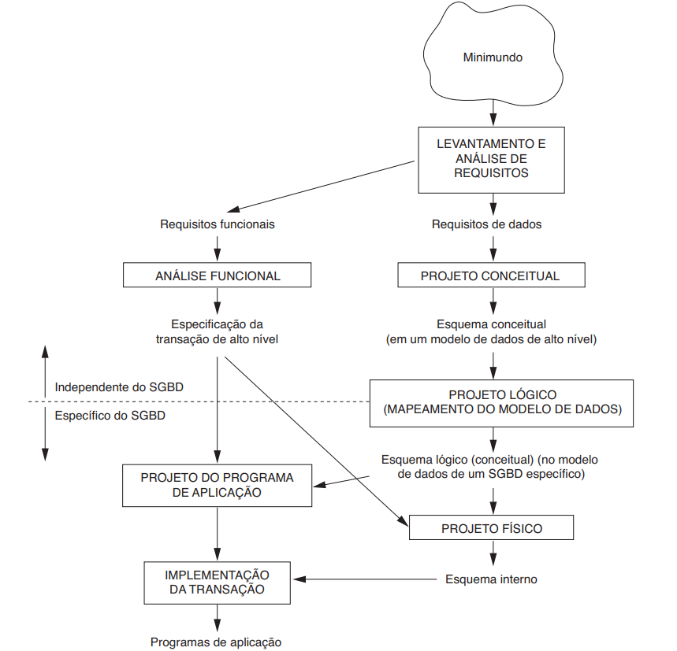
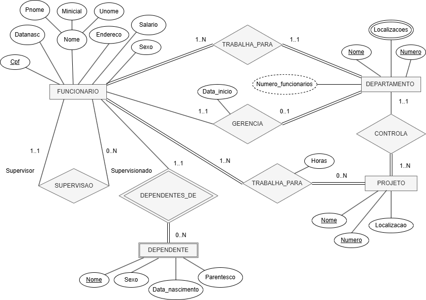
A primeira imagem acima representa o panorama das Fases do Projeto de Banco de Dados, que começa com a Coleta e Análise de Requisitos e avança para o Projeto Conceitual. Este fluxograma estabelece a ordem e a relação entre as etapas (Conceitual, Lógica e Física), guiando o desenvolvedor desde a descrição das necessidades do usuário até a implementação no SGBD.
Já na segunda imagem, exemplifica a fase de Projeto Conceitual, sendo um Diagrama ER/EER (Modelo Entidade-Relacionamento/Estendido). Utiliza-se essa notação gráfica de alto nível para formalizar a estrutura do banco de dados, mostrando os tipos de entidade, os atributos, os relacionamentos e as restrições que governam os dados (como a cardinalidade). Esta representação é crucial por ser independente de qualquer SGBD e servir como a especificação formal que será traduzida para o esquema lógico na fase seguinte.
O conceito de Entidade no MER refere-se a algo do mundo real com existência independente, seja ela física ou conceitual. O que é modelado é o Tipo de Entidade, a descrição abstrata de um conjunto de instâncias que compartilham os mesmos Atributos e estrutura. As entidades são puramente estruturais, focando no estado dos dados sem incluir comportamentos (métodos) como na programação orientada a objetos. Os atributos definem a informação da entidade e possuem um domínio (conjunto de valores válidos). Um Atributo-Chave é crucial para identificar unicamente cada entidade. Os atributos são classificados como: simples ou compostos (ex: Endereço), monovalorados ou multivalorados (ex: Telefones), e armazenados ou derivados (ex: Idade). Todos esses detalhes devem ser formalmente registrados no Dicionário de Dados.
|
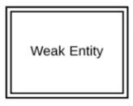 |
*Entidades fracas dependem de algum outro tipo de entidade. Elas não possuem chaves primárias e não têm significância no diagrama sem sua entidade primária.* |
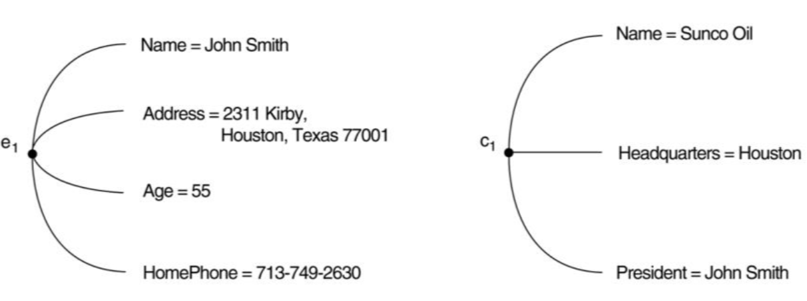
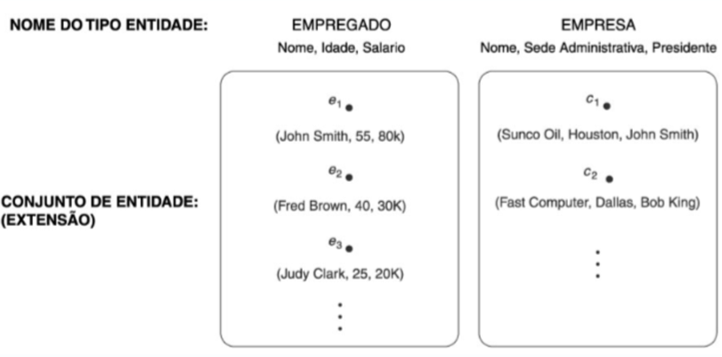
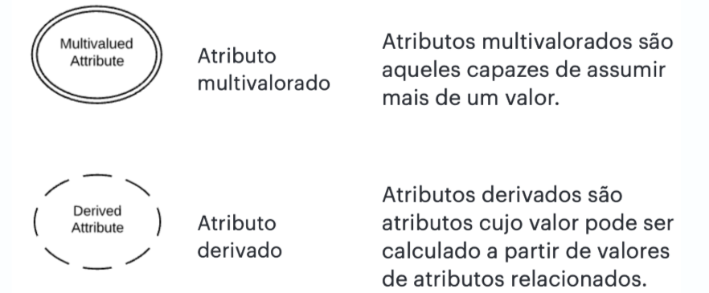
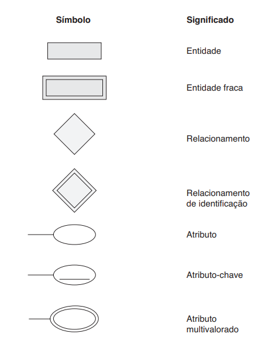
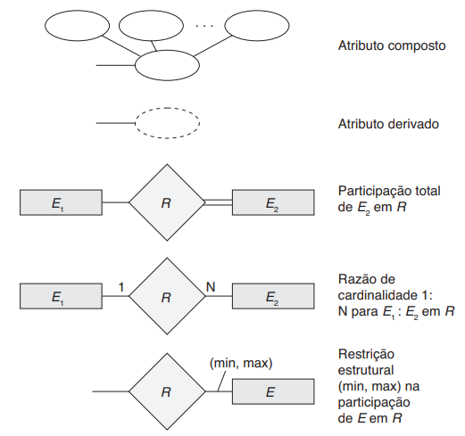
Classificação que diferencia se o valor é guardado explicitamente (Armazenado) ou se é calculado/obtido a partir do valor de outros atributos relacionados (Derivado). O valor de um atributo derivado não é armazenado no banco de dados, mas pode ser determinado (calculado) a partir de um atributo armazenado, como no seu exemplo: a Idade é derivada da Data de Nascimento
Chaves são um conjunto mínimo de atributos que identificam unicamente uma entidade num conjunto
É uma das Chaves Candidatas que é escolhida pelo projetista do banco de dados para ser o identificador principal da relação. É o identificador mais importante, usado para referências e indexação.
É uma Superchave mínima. Mínima significa que se você remover qualquer atributo do conjunto, o restante dos atributos não será mais uma Superchave (perde a propriedade de unicidade).
Qualquer chave (Superchave, Candidata ou Primária) que consiste em dois ou mais atributos. Muitas vezes usada em tabelas resultantes de relacionamentos Muitos-para-Muitos.
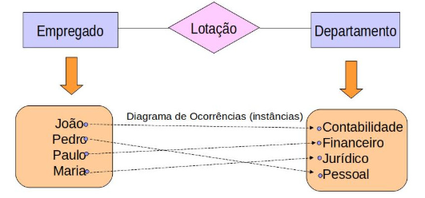
Garantimos que o Banco de Dados, que possui:
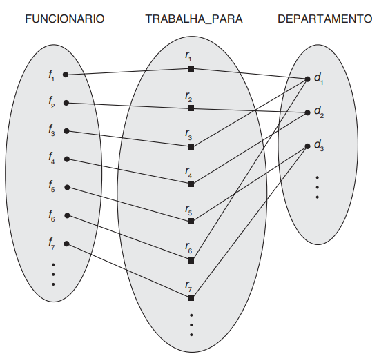
A imagem acima é uma visualização direta do Conjunto de Relacionamento, ilustrando como as associações ocorrem na prática no banco de dados. O losango central, que representa o Tipo de Relacionamento TRABALHA_PARA, define a regra de conexão entre as entidades FUNCIONARIO e DEPARTAMENTO. As linhas que partem do losango e unem instâncias específicas, como o funcionário $f_1$ ao departamento $d_1$, são as Instâncias de Relacionamento individuais. O diagrama, portanto, mostra a totalidade dos fatos registrados no sistema, agrupando visualmente os funcionários ($f_1, f_3, f_6$, etc.) sob seus respectivos departamentos, demonstrando o conjunto de relacionamento completo.
É uma propriedade importante que diz respeito a quantas (máxima e mínima) ocorrências de uma entidade podem estar associadas a uma determinada ocorrência através do relacionamento
Cardinalidade Mínima: é o número mínimo de ocorrências de entidade associadas a uma ocorrência da entidade em questão através do relacionamento
Cardinalidade Máxima: é o número máximo de ocorrências de entidade associadas a uma ocorrência da entidade em questão através do relacionamento
|
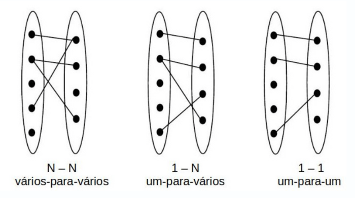 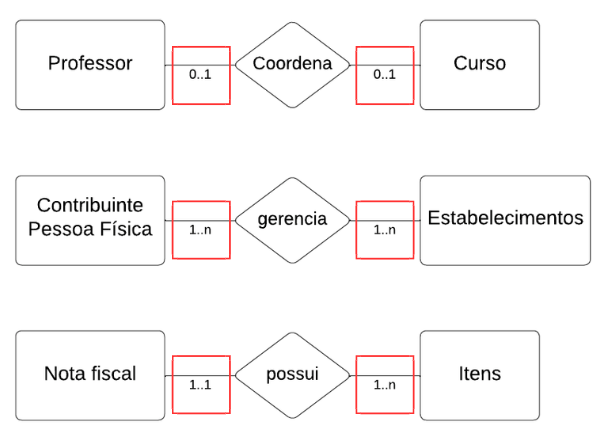 |
|
Símbolos e notação de diagramas ER:
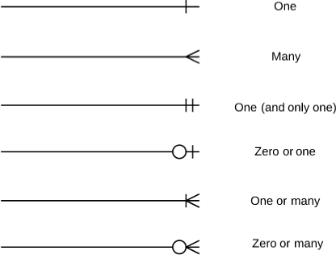
Exemplo de diagrama com uso das cardinalidades:
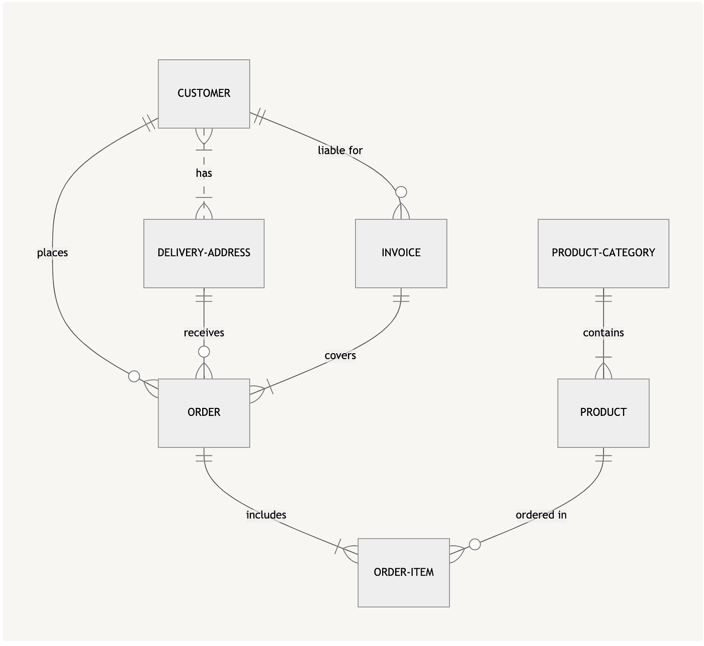
Atributos descrevem propriedades de entidades. Se um conceito for significativo o suficiente para ter seus próprios atributos ou participar de múltiplos relacionamentos, ele deve ser uma Entidade. Caso contrário, é um Atributo.
Um Relacionamento pode ser elevado a uma Entidade (chamada de Entidade de Relacionamento ou Entidade Associativa). Isso é necessário quando o relacionamento possui seus próprios atributos (Ex.: o relacionamento TRABALHA_PARA pode ter o atributo Data_de_Início) ou quando ele precisa participar em outros relacionamentos.
Existem diferentes representações/notações (ou "padronizações") para desenvolvimento de diagramas. Alguns modelos mais usados na literatura são:
Neste link podemos encontrar um resumo sobre as notações mais utilizadas.
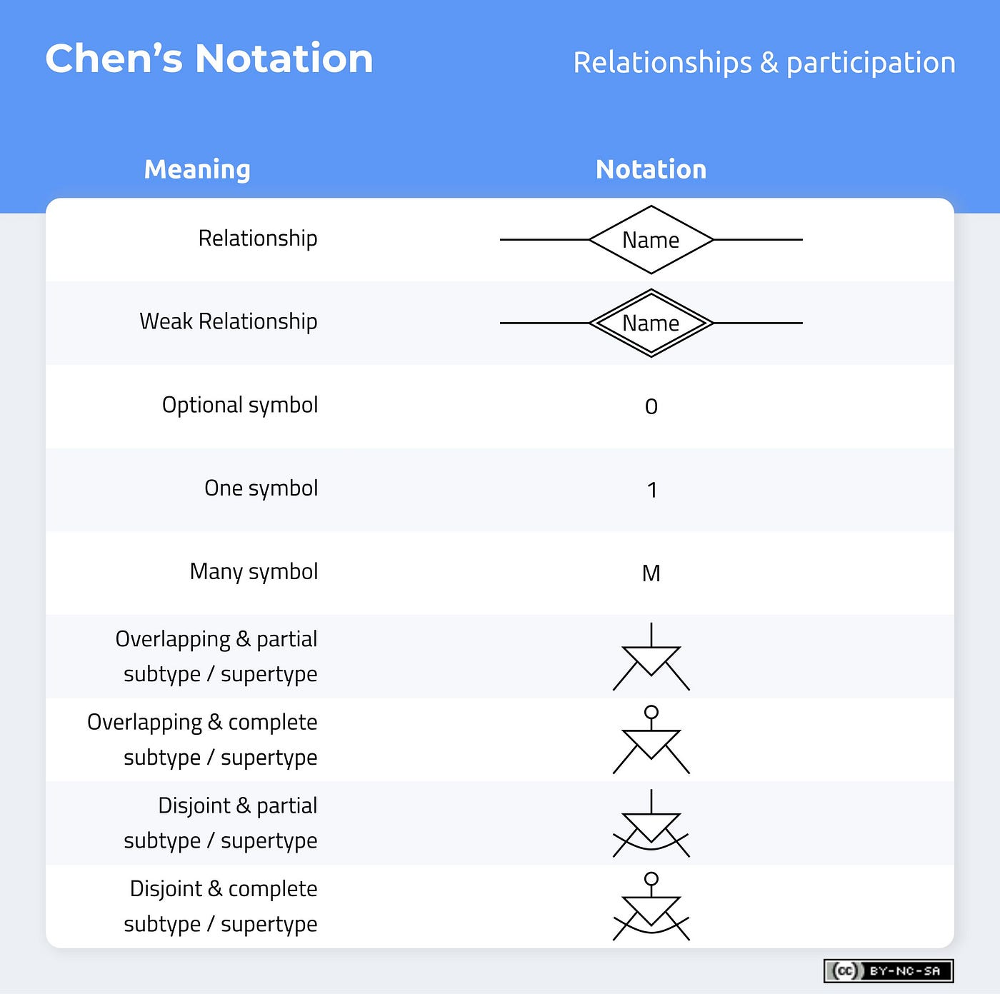
|
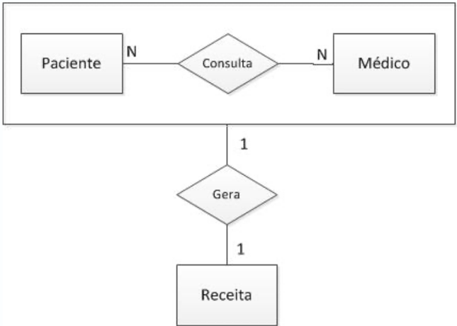 |
|
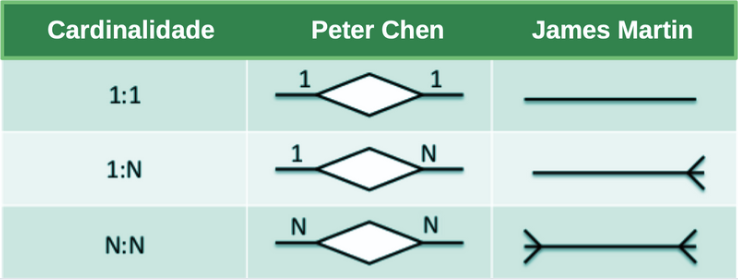
|
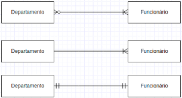 |
|
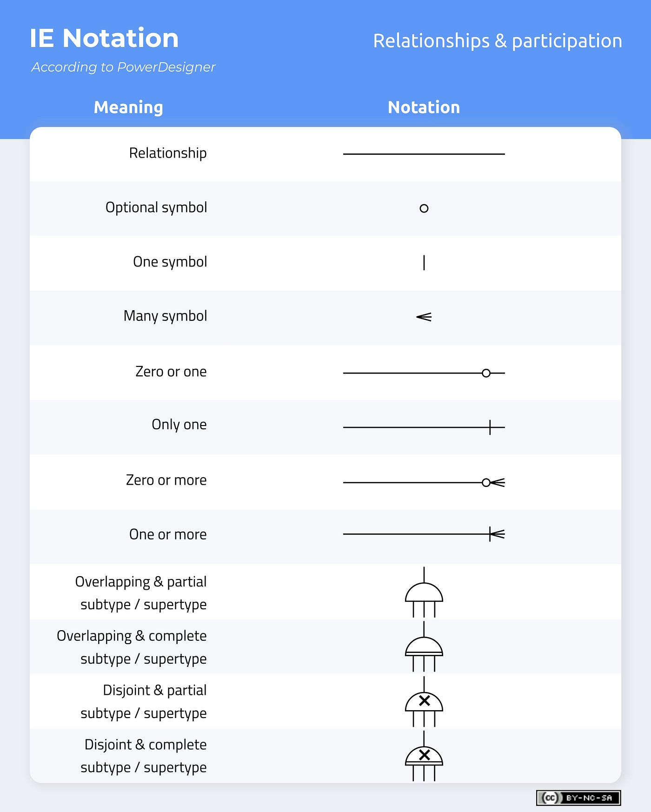
A seguir estão exercícios práticos de modelagem entidade-relacionamento (MER) com base em cenários da fiscalização tributária, especialmente envolvendo EFD, NF-e e itens de NF-e.
Considere o cenário abaixo:
Liste as entidades principais que deveriam existir nesse cenário e indique pelo menos dois atributos para cada uma.
Exemplo de resposta esperada:
CONTRIBUINTE — id_contribuinte, cnpj, razao_socialNFE — id_nfe, chave_acesso, valor_totalITEM_NFE — id_item, descricao, valor_itemEFD — id_efd, periodo, data_inicial, data_finalRepresente, em linguagem natural, os relacionamentos entre as entidades abaixo:
Resposta esperada:
CONTRIBUINTE emite uma ou muitas NFE.NFE possui um ou muitos ITEM_NFE.EFD registra uma ou muitas NFE.Desenhe o modelo ER simplificado para este cenário usando cardinalidade:
CONTRIBUINTE 1:N NFENFE 1:N ITEM_NFEEFD 1:N NFEDica: utilize o conceito de:
Para a entidade NFE, defina:
Exemplo:
id_nfe → chave primáriachave_acesso → chave candidatadata_emissao → atributo obrigatórioobservacao → atributo opcionalConsidere as seguintes entidades:
EFD_0000 — cabeçalho da escrituração fiscalEFD_C100 — documentos fiscais registrados na EFDEFD_C170 — itens dos documentos fiscaisElabore o relacionamento entre elas e justifique sua resposta.
Resposta esperada:
EFD_0000 1:N EFD_C100EFD_C100 1:N EFD_C170Isso ocorre porque uma escrituração possui vários registros de documentos e cada documento possui vários itens.
Considere a seguinte tabela:
NFE com os atributos: id_nfe, chave_acesso, emitente, valor_total, item_descricao, item_valor
Identifique o problema de modelagem e proponha uma estrutura melhor.
Resposta esperada:
NFE e ITEM_NFE.Crie um diagrama Mermaid com as entidades:
CONTRIBUINTENFEITEM_NFEEFDE especifique as cardinalidades entre elas.
Exemplo de estrutura inicial:
erDiagram
CONTRIBUINTE ||--o{ NFE : emite
NFE ||--o{ ITEM_NFE : possui
EFD ||--o{ NFE : registra
Leia a seguinte situação:
Uma NF-e foi cadastrada, mas um de seus itens foi inserido sem referenciar corretamente a nota.
Quais problemas isso pode causar na fiscalização tributária?
Resposta esperada:
Elabore um modelo conceitual simplificado para um sistema de fiscalização tributária que deve armazenar:
Seu modelo deve conter:
CONTRIBUINTE 1:N NFENFE 1:N ITEM_NFEEFD 1:N NFE ou EFD 1:N EFD_C100EFD_C100 1:N EFD_C170